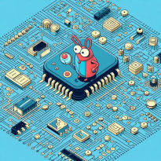

| Library: | Mouse Tools |
| Introduced: | 5.0.4-HC |
| Appearance: |  |
This tool adds images to a circuit, which can be useful for including diagrams and other visuals for documentation purposes.
Image data can be embedded within the project. This is simple and convenient, but may make for very large project files if the embedded images are large or high-resolution. Alternatively, the Logisim project can store only a link to a separate image file, which must then be kept alongside the project file. In this case, you can update the separate image file at any time, including while viewing the project in Logisim&emdash;the image shown in the circuit will update after a short delay, as soon as Logisim notices the external file has changed.
Limitation: The size scale of an image can't yet be adjusted within Logisim, the image is always shown at 100% size without cropping. Images do not normally "snap to grid" on the canvas. While moving a callout, you can hold the ALT key (or option on MacOS) to force "snap to grid" behavior.
Currently supports only PNG or JPG/JPEG images.
Currently supports only local files. Linking to a URL is not supported, for example.
Images are silently during FPGA synthesis.